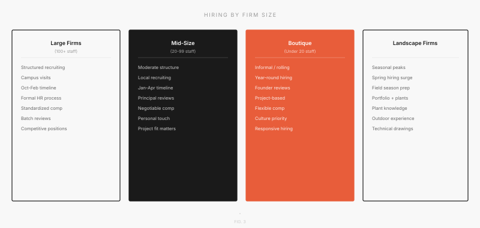

Hiring Differences by Firm Size

Large Firms (100+ employees)
These firms run the most structured hiring processes. They have dedicated HR or Talent teams, post openings on their website and job boards, conduct on-campus recruiting at target schools, and run standardized interview rounds. Compensation is competitive with benefits, mentorship programs, and clear paths to licensure support. Examples include Gensler, HOK, SOM, and Perkins&Will. If you apply early (September–November), you have the best chance of standing out.
Mid-Size Firms (20–99 employees)
Hiring is moderate in structure. A principal or senior designer reviews your portfolio. There is no HR filter. They typically hire between January and April. There is more room for personality and cultural fit in your application than at large firms. These firms are often the sweet spot for mentorship because you will work closely with experienced designers who have time to teach you.
Boutique Studios (<20 employees)
The founder or a partner probably reviews your portfolio personally. Hiring often happens when a new project comes in, so there may not be a posted opening. Cold emails work here. They might not advertise on job boards. Cultural fit matters enormously; you are not just being evaluated on your design skills but on whether you will mesh with the small team. Timeline: year-round, but peaks in spring.
Landscape Architecture Firms
Seasonal hiring peaks in spring as field season approaches. Firms want to see plant knowledge and site design skills alongside digital competency. Many landscape architecture firms also value construction documentation experience. If you have experience with grading plans, planting specifications, or site surveying, highlight it. Timeline: heaviest hiring February–April.